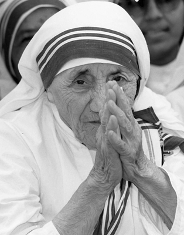

“Ay’da bile fakirler varsa, oraya da gideceğiz!”
Rahibe Teresa
Yüreğindeki insan sevgisi ve muhtaçlara yardım etme güdüsü, daha küçük yaşlarda evden ayrılarak dünyanın bir diğer ucunda, kimsenin görmediği yardım faaliyetlerinde bulunmasını sağladı. Ancak içindeki yardım etme duygusu o kadar güçlüydü ki insanlığa katkıları sadece Uzakdoğu’nun küçük bir bölgesi olan Kalküta ile sınırlı kalmadı. Kısa sürede yardımseverliği ve fedakârlığıyla tüm dünya tarafından bilinen bir insan haline geldi. Kurduğu vakıflar, daha kendisi hayattayken dünyanın 123 farklı ülkesinde muhtaçlara yardım götürüyordu.
Kırk yılı aşkın bir süre hayatını fakirlere, yetimlere, hastalara, acizlere ve muhtaçlara adadı. Tüm bunlar için ilhamını dinden almıştı. Dünyanın en büyük ve en kapsamlı yardım teşkilatlarından birini kuran Rahibe Teresa öldüğünde, BM eski Genel Sekreteri Pérez de Cuéllar, “Teresa Birleşmiş Milletler’di, Teresa barıştı” açıklamasını yapacaktı.
Dünyayı iyiliğin ve barışın değiştirebileceğine inanan ve hayatını bu uğurda harcayan Rahibe Teresa, dünyayı değiştiren kadınlar arasına girmekle kalmadı; belki de 20. yüzyılın en ses getiren kadınlarından biri oldu.
Osmanlı tebaası olarak doğdu
Makedonya’nın Osmanlı hâkimiyeti altında olduğu dönemde, 26 Ağustos 1910’da, Üsküp’te dünyaya geldi. Doğduğunda adı Agnes Gonxha Bojaxhiu’ydu. Babasının ölümünün ardından annesi, Agnes’i sıkı bir Katolik olarak yetiştirdi. Annesinin anlattığı misyoner hikâyelerinden etkilenince 12 yaşında kendisini dine adamaya karar verdi. Ve 18 yaşına geldiğinde, Tanrı tarafından Katolik bir misyoner rahibe olarak görevlendirildiğine ilişkin ilahi bir mesaj aldığını söyleyerek, annesini bir daha görmemek üzere evden ayrıldı. ‘Loreto Rahibeleri’ isimli bir misyoner grubuna katılmıştı.
Makedonya’dan Hindistan’a...
İlk etapta İngilizce öğrenmek için İrlanda’ya gitti. Loreto Rahibeleri, Hindistan’daki misyonerlik faaliyetleri kapsamında, çocuklara İngilizce dersler veriyorlardı. Agnes de Hindistan’a geldi ve Himalayalar’ın yakınındaki Darjjeling’de ‘çıraklık’ eğitimine başladı. Rahibe olarak ilk yeminini ettikten sonra, ünlü bir misyoner olan Thérèse de Lisieux’ten esinlenerek adını Teresa olarak değiştirdi. Rahibe Teresa efsanesinin temelleri atılmaya başlamıştı.
1944’e gelindiğinde coğrafya ve temel Hıristiyanlık bilgisi dersleri verdiği Kalküta’daki St. Mary’s Lisesi’ne müdür olarak atanmıştı. Her ne kadar okulda çocuklara eğitim vermek çok hoşuna gitse de Kalküta’daki fakirlik Rahibe Teresa’yı rahatsız ediyordu. Bir süre sonra şehirde kıtlık baş göstermiş, Ağustos 1945’te Hindu/Müslüman çatışmalarının başlamasıyla birlikte şehir umutsuzluğun ve korkunun ellerine teslim olmuştu. Bu süreçte sağlıksız yaşam şartları, kadıncağızı verem etti. Tedavisi için trenle Darjeeling’e giderken, kendi ifadesine göre ‘ikinci ilahi mesaj’ı alacaktı. Rahibe Teresa, bunu daha sonra “Hemşire Okulu’nu bırakmalı ve yoksullarla birlikte çalışmalı, onların arasında yaşamalıydım. Bu bir emirdi. Nereye ait olduğumu biliyordum; ama oraya nasıl varacağımı bilmiyordum” şeklinde açıklayacaktı.
Vatikan yeşil ışık yakıyor
Vatikan 1948’de Rahibe Teresa’ya, aldığı mesaj gereği, Kalküta Başrahipliği’nin denetiminde, fakirlere yönelik misyonerlik çalışmaları yapması için yeşil ışık yakacaktı. Üzerinde mavi şeritleri olan ve bundan sonra üzerinden hiç çıkarmayacağı o meşhur beyaz pamuklu elbisesini giydi. Hindistan vatandaşlığına geçti. Artık Kalküta’nın fakirlik kokan arka mahallelerine dalmaya hazırdı. Fakir ailelerin çocuklarına ders vermek yanında, temel tıp eğitimi alarak hastaların evlerine gitmeye ve tedavilerine yardımcı olmaya da başladı. Bu çalışmaları kısa sürede, kendisinden duyduğu memnuniyeti dile getiren Hindistan Başbakanı da dâhil herkesin dikkatini çekmişti.
Rahibe Teresa, günlüğünde, bu dönemin büyük zorluklarla geçtiğini anlatır. Bir geliri yoktur; gıda ve diğer malzemeler için hep başkalarından bağış istemektedir. Yalnız ve sıkıntılarla dolu olduğu günlerde şüpheye düşecek, rahibeliğinin ilk zamanlarındaki rahat yaşamına dönmeyi isteyecek; ancak “Ben bu kadar acı çekiyorsam, fakirler kim bilir neler çekiyordur” diyerek yeniden işine koyulacaktır.
Etki alanının artması üzerine Vatikan, Teresa’nın Hindistan’da bir piskoposluk bölgesi kurmasına izni verdi. Teresa, bu faaliyetler doğrultusunda kilisenin de desteğiyle Kalküta İyiliksever Misyonerler Vakfı’nı kurdu. Vakfın amacı, Teresa’nın kendi ifadesiyle, “açlara, çıplaklara, evsizlere, topallara, körlere; sevilmeyen, istenmeyen, kollayanı, bakanı kalmamış, toplum tarafından dışlanan ve topluma bir yük haline gelmişlere” yardım etmekti.
Kalküta’da bir sığınma evi açtı. Yetkililerin kendisine bağışladığı eski bir Hindu tapınağını, fakirler için ücretsiz barınak sağlayan Kalighat Ölüm Evi adındaki bir sığınma evine çevirdi. Ancak daha sonra buranın ismini Kalighat Temiz Kalp Evi’ne çevirecekti. Buraya genellikle son zamanlarını huzur içinde geçirmek isteyen, ölmek üzere olan hastalar veya ölümü yaklaştığı için terk edilmiş insanlar geliyordu. Müslümanlar Kur’an-ı Kerim okuyor, Hindulara Ganj nehrinden su getiriliyor ve Katoliklere de İncil okunuyordu.
Bu arada cüzzama karşı da savaş açmıştı. Misyonerler Vakfı ülkenin birçok yerinde cüzzamlılara sağlık hizmetleri veren klinikler açıyordu. Vakfa çok sayıda kaybolmuş çocuğun getirilmesi üzerine Teresa, yetim ve evsiz çocuklara hizmet verecek olan Temiz Kalp Çocuk Evi’nin açılmasına ön ayak oldu. Tek kişilik yardım ordusu olmuştu adeta...
Vakıf kısa sürede tüm ülkede dikkatleri üzerine çekti; yapılan bağışlar ve yardımlar arttı. Geliri arttıkça tüm Hindistan’da yetimhaneler, darülacezeler ve cüzzamlılar için yeni barınaklar açtı. Kısa sürede Hindistan sınırlarını aşan vakıf, Hindistan dışındaki ilk ofisini Venezüella’da açtı. Bunu Roma, Tanzanya ve Avusturya’da açılan ofisler izledi. Ardından İyiliksever Misyoner Kardeşler Derneği kuruldu. 1960’lı yıllarda Asya, Avrupa, Afrika ve ABD’de birçok yeni ofis açılmıştı. Teresa adı dalga dalga yayılıyordu.
Eleştirilerin odağı olmaya başlıyor
Ancak bir süre sonra Rahibe Teresa’ya yönelik eleştiriler fısıldanmaya başladı. Fakirlikle mücadele etmek yerine fakirliği kutsadığı iddia ediliyordu. Acı çekmeyle ilgili düşünceleri de eleştiri konusu yapıldı. Teresa, acı çekmenin insanları Hz. İsa’ya yakınlaştıracağını düşünüyordu. Zaten sık sık görüştükleri Prenses Diana’ya da “Başkalarını iyileştirmek istiyorsan, kendin acı çekmelisin” demişti.
Aynı zamanda ölümün eşiğindekiler için açtığı sığınma evindeki tıbbi uygulamalar da The Lancet ve British Medical Journal gibi ünlü tıp dergileri tarafından eleştirildi. Dergiler, bu sığınma evinde enjektörlerin birkaç defa kullanıldığını, yaşam şartlarının kötü olduğunu, hastaların soğuk banyolarda yıkandığını ve tedavide anti-materyalist bir yöntem uygulandığını yazıyordu. Bununla birlikte vakıf, fakirler için bağışlanan paraları başka projelerde kullandığı iddiasıyla da suçlanıyordu. Bir başka eleştiri konusu da Teresa’nın kazandığı uluslararası itibar sonucu kaçınılmaz olarak siyasilerle kurduğu ilişkilerdi. Bazı sol görüşlü kuruluşlar Teresa’yı, İngiltere Başbakanı Margaret Thatcher ve ABD Başkanı Ronald Reagan gibi ‘sağ görüşlü’ politikacılara verdiği destekten dolayı eleştirdi.
Mermiler arasındaki rahibe
1982’deki Beyrut Kuşatması sırasında Rahibe Teresa, cephede sıkışıp kalmış 37 çocuğu kurtararak İsrail ile Filistin militanları arasında geçici bir ateşkes imzalanmasını sağlayınca popülaritesi tavan yaptı. 1980’li yıllarda Doğu Avrupa dünyaya açılmaya başladığında faaliyetlerini eski komünist ülkelerini de kapsayacak şekilde genişletti. Nerede bir sıkıntı varsa Teresa oradaydı. Kıtlık ve kuraklık kurbanlarına yardım için Etiyopya’ya, Çernobil Faciası kurbanları için Çernobil’e ve deprem kurbanlarının yaralarını sarmak için Ermenistan’a gitti. İlk kez 1991’de memleketi Arnavutluk’a döndü ve Tiran’da Misyoner Kardeşler Vakfı’nı kurdu.

İyilik elçisi Rahibe Teresa, yıllarca üzerinden çıkarmadığı beyaz pamuklu elbisesiyle
1996’ya gelindiğinde, Teresa’nın önderliğindeki vakıf, 100’den fazla ülkede 500’ün üzerinde kurum işletiyordu! Bu idealist kadın, adeta tek başına devlet olmuştu! Misyonerler Vakfı büyüdükçe büyümüş ve dünya genelindeki 450 merkezle ‘fakirlerin en fakirine’ yardım eder hale gelmişti.
Rahibe Teresa, 1983’te Roma’da, Papa II. John Paul’ü ziyareti sırasında bir kalp krizi geçirdi. 1989’da bunu ikinci kriz izleyecek, kendisine bir kalp pili takılacak, ama o durmayacaktı; yardım bekleyen milyonlar vardı. İlginçtir, Kalküta Başpiskoposu Henry Sebastian D’Souza, Rahibe Teresa kalp rahatsızlığından dolayı hastaneye yattığında, kendisinden aldığı izinle rahiplerden birini Teresa’ya şeytan çıkarma ayini yapmakla görevlendirmişti. D’souza, Teresa’nın kalbinin şeytan tarafından ele geçirilmiş olabileceğini düşünüyordu!
Kalp krizlerini, kırılan bir köprücük kemiği, sıtma ve bir kalp ameliyatı izledi. Yine de durmaya niyeti yoktu; ama açıkça görülüyordu ki Teresa için alarm zilleri çalmaya başlamıştı. Ve bu iyilik elçisi, 5 Eylül 1997’de ardında el uzatılmayı bekleyen milyonlar bırakarak aramızdan ayrıldı.
Öldüğünde Misyonerlik Vakfı’nın bünyesinde 4 binden fazla rahibe çalışıyordu, 300’ün üzerinde bağlantılı kardeş kurum vardı. Yüz yirmi üç farklı ülkede kurulan 610’dan fazla kuruluşta 100 binin üzerinde gönüllü çalışıyordu. Bu kuruluşlar arasında AIDS, cüzzam ve tüberküloz hastalıkları için kurulan sağlık merkezleri, yetimhaneler, darülacezelerin yanı sıra ailelere ve çocuklara danışmanlık sağlayan merkezler de vardı.
Ölümünün ardından naaşı Kalküta’daki St. Thomas Kilisesi’nde bir hafta ziyarete açık tutuldu ve Hindistan hükümetinin düzenlediği resmi bir törenle defnedildi. Geride, ‘inanmış’ bir insanın neler yapılabileceğinin ispatı olan devasa bir yardım imparatorluğu ve kendisine el verilen mutlu milyonlar bırakmıştı.
Azizlik için bir mucizeye daha ihtiyacı var
1997’de ölümünün ardından Teresa’nın ‘azize’ ilan edilmesi için çalışmalara başlandı. Ancak bir kişinin ‘azize’ olabilmesi için, en az iki mucizesinin kanıtlanması gerekiyordu. Vatikan, 2002 yılında Monica Besra adlı bir kadının, üzerinde Rahibe Teresa’nın resmi bulunan bir madalyonla karnındaki tümörün iyileştiği şeklindeki iddiasını mucize olarak kabul etti. Ancak aralarında Besra’nın kocasının da olduğu bazı kişiler, tümörün tıbbi müdahaleyle yok olduğunu söylediler. Yapılan tüm eleştirilere rağmen Papa II. Jean Paul 2003’te Rahibe Teresa’yı ‘Mübarek İnsan’ ilan etti. ‘Mübarek’ Teresa’nın azize ilan edilmesi için bir mucizeye daha ihtiyacı vardı...
NOTLAR